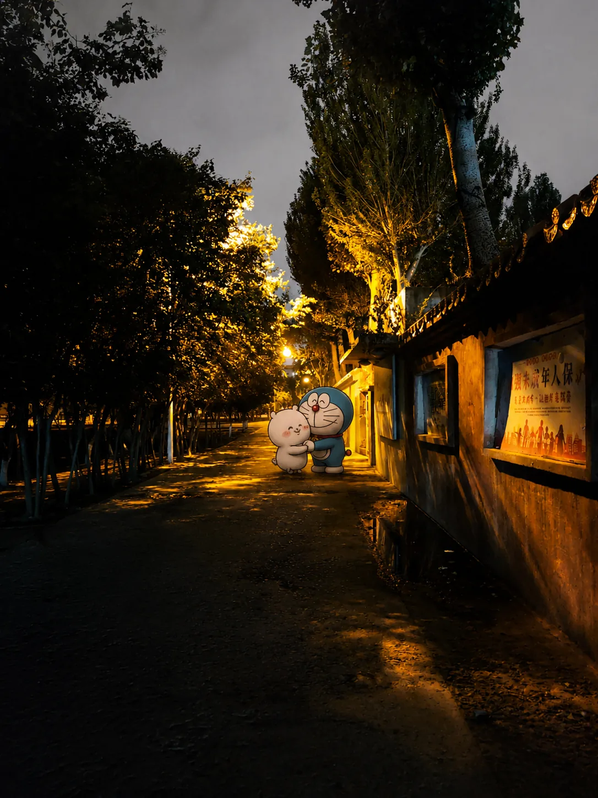

✦ ✦ ✦
韩思琪我喜欢你
LIKE · LOVE · ALWAYS
❤ — · — ❤
❝
——:——
——
从 2026.04.28 到此刻
—
条消息
每一个字都是我喜欢你的证据
—
天
—
小时
—
日均

MY VOW TO YOU
这些数字还在长，我会一直数下去
你说的每一句话我都记得
以后的路也一起走吧
forever yours
一休仓买 · 雨夜街角
RAINY NIGHT · 24H STORE
→
soyb & Hon · 2026.04.28 → ∞